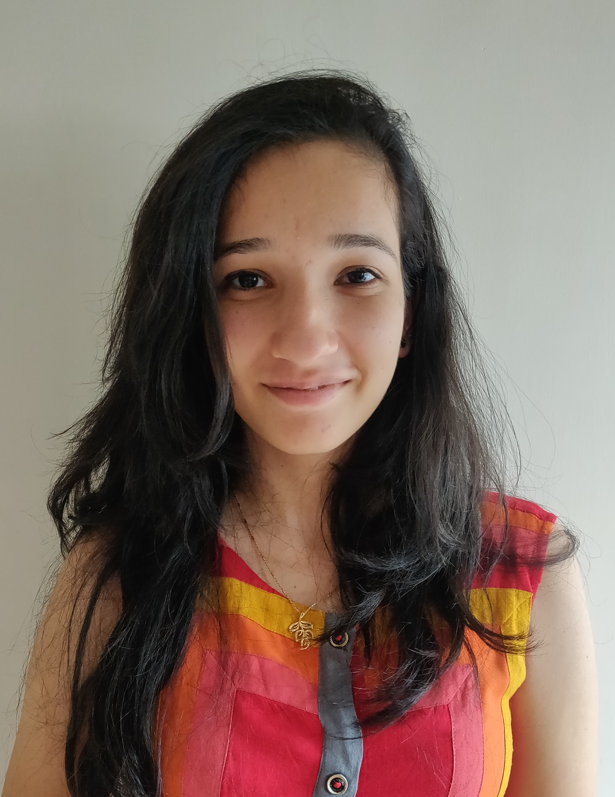

I am a Software Engineering Intern at " target="_blank">Apple, India interested in applications of Machine Learning and Deep Learning in Natural Language Processing. I work in Information System and Technology team at Apple. I am a final year B.E. Computer Science + MSc. Economics student at BITS Pilani, K.K. Birla Goa Campus. Prior to this, I worked as a Summer Intern, at Google Research team, Bangalore, India.
[CV] | [Google Scholar] | [Projects]
My other hobbies include painting, playing guitar and traveling. I am also fond of playing outdoor sports, especially Basketball. I grew up in આપણું અમદાવાદ